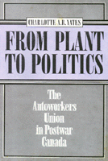

<body bgcolor="#FFFFFF" text="#000000" link="#0000FF" vlink="#CC0000" alink="#CC0000"><center><hr width="350" size="1" align="center" noshade>A case study of the Canadian Autoworkers Union's role in shaping the Canadian economy and responding to global restructuring<hr width="350" size="1" align="center" noshade><p><a href="https://cdcshoppingcart.uchicago.edu/Cart/ChicagoBook.aspx?ISBN=9781566390439&&PRESS=temple" target="_top">Buy this book!</a> | <a href="https://cdcshoppingcart.uchicago.edu/Cart/Cart.aspx?PRESS=temple" target="_top">View Cart</a> | <a href="https://cdcshoppingcart.uchicago.edu/Cart/Cart.aspx?PRESS=temple" target="_top">Check Out</a></p><p></p></center><!--none//--><h1>From Plant to Politics</h1>
<H2>The Autoworkers Union in Postwar Canada</H2>
<h3>Charlotte A. B. Yates</h3>
<P>cloth 1-56639-043-5 $49.95, Jun 93, <FONT COLOR=#990033>Out of Print</FONT>
<BR> 320 pp
6x9
2&nbsp;tables
</P><BLOCKQUOTE><I>"There is a real need for this study: there is nothing else like it in Canadian scholarship. Dr. Yates has honed in on a crucial period in the development of the Canadian labour movement. Unlike any previous study, she has looked inside one of the most important unions in the country to dissect the exact nature and timing of the postwar 'compromise' and the pressures on it in recent years. This highly perceptive, analytically sophisticated, and conceptually rigorous study is far more than a narrative of union development. It situates the UAW in a clear context of class relations and political economy and provides a solid theoretical framework for analysis that integrates the most recent thinking and writing on these subjects."</I>
<br>&#151<b>Craig Heron</b>, York University<I></I></BLOCKQUOTE>
<p>In this path-breaking discussion of Canadian labor relations, Charlotte Yates shows, through a case study of the Autoworkers Union Canada, how unions, as complex organizations engaged in strategic activities, can have a definite impact on the national political economy. Using extensive archival materials, Yates examines how unions were demobilized in their relationships with the state, employers, and political parties as Fordist regulatory structures and practices forced unions to accept the constraints of responsible union behavior. She argues that the Canadian Autoworkers' collective identity and internal organizational structure counteracted these demobilizing tendencies. This historical legacy laid the groundwork for the Autoworker Union's return to militancy in the 1980s and '90s and has shaped their responses to the pressures of economic globalization and heightened competition.
<BR>&nbsp;<h2>Contents</h2><P>
<p>Tables
<br>Acknowledgments
<br>Acronyms
<p><b>Part I: Setting the Stage</b>
<br>1. Unions in the Canadian Fordist Landscape: Pinprick or Landmark?
<br>2. Fighting Back: Building the UAW in Canada, 1936-1945
<br>3. Responsible versus Militant Unionism, 1946-1949
<p><b>Part II: Fordism in the Canadian Auto Industry</b>
<br>4. Private Solutions to Postwar Regulation: Auto Industry Collective Bargaining, 1950-1968
<br>5. To the Tune of the Pluralist Waltz: The UAW and the Liberal Welfare State, 1950-1968
<br>6. The Third Option: Party Politics and the UAW, 1950-1968
<p><b>Part III: Back to the Future: From Fordism to Fordism?</b>
<br>7. Internal Conflict and Realignment: The Canadian UAW, 1969-1973
<br>8. Wage Controls: the Making of a Labour Movement, 1974-1978
<br>9. New Directions for Canadian Autoworkers, 1979-1984
<br>10. Conclusion
<p>Notes
<br>Bibliography of Primary Sources
<br>Index
</P><BR>&nbsp;<H2>About the Author(s)</H2>
<P><b>Charlotte A. B. Yates</b> is Associate Professor in the Labour Studies Programme at McMaster University in Ontario, Canada.</P>
<BR><H2>Subject Categories</H2>
<p><A HREF="/tempress/labor.html" TARGET="_top">Labor Studies and Work</a>
<BR><A HREF="/tempress/political.html" TARGET="_top">Political Science and Public Policy</a>
</p>
<BR><h2 class="inpageheading">In the series</H2>
<P><I><a href="http://www.temple.edu/tempress/labor_change.html" onMouseOver="window.status='Click for other books in this series!'; return true;" onMouseOut="window.status=''; return true;" target="_top">Labor and Social Change</a></i>, edited by Paula Rayman and Carmen Sirianni.
</p><p><i>Labor and Social Change</i>, edited by Paula Rayman and Carmen Sirianni, includes books on workplace issues like worker participation, quality of work life, shorter hours, technological change, and productivity, as well as union and community organizing and ethnographies of particular occupations.</p>
<p align="center"><a href="https://cdcshoppingcart.uchicago.edu/Cart/ChicagoBook.aspx?ISBN=9781566390439&&PRESS=temple" target="_top">Buy this book!</a> | <a href="https://cdcshoppingcart.uchicago.edu/Cart/Cart.aspx?PRESS=temple" target="_top">View Cart</a> | <a href="https://cdcshoppingcart.uchicago.edu/Cart/Cart.aspx?PRESS=temple" target="_top">Check Out</a></p><p><font face="Arial" size="1"><a href="copyright.html" onMouseOver="window.status='Web Copyright Policy';return true;" onMouseOut="window.status=''" title="Web Copyright Policy">&copy;</a> 2015 <a href="http://www.temple.edu" target="new" onMouseOver="window.status='Link to Temple University home page';return true;" onMouseOut="window.status=''" title="Link to Temple University home page">Temple University</a>. All Rights Reserved. http://www.temple.edu/tempress/titles/835_reg.html</font></p>